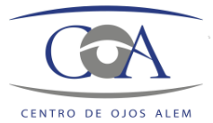

Desarrollo backend - Soporte técnico de integraciones comerciales - (Julio - Actualidad)
Desarrollo de nuevas funcionalidades y reparación de bugs
Documentación
Soporte técnico para integraciones comerciales: Coordinacion con desarrolladorxs de otras billeteras y comercios
de las tareas necesarias para interoperar o incorporarnos como medio de pago
Soporte técnico - (Mayo - Julio)
Analisis y reporte de inconvenientes informados por
usuarixs
Documentación

Auxiliar administrativo
-
(2021-2022)
- Alem Visión - Clínica Oftalmológica
Refractometría y tonometría.
Asistencia en procedimientos médicos de baja complejidad.
Manejo de software de obras sociales para registro de atención
de pacientes.
Elaboración de historias clínicas.
Atención al público.
Voluntariado en DDHH
-
(2016-2019)
- Querella Megacausa Campo de Mayo
Consulta de bases de datos (DIPBA - RUTVE) .
Clasificación y digitalización de documentación judicial.
Desgrabación e incorporación de testimonios.
Modelado de base de datos relacional.
Mi Educación
Formación básica
-
(2004 - 2015)
Secundario completo con orientación a Economía y administración de empresas - Pio XII
Formación Universitaria
-
(2019-2021)
Enfermería universitaria (Incompleto - Hasta 2° año inclusive) UNaM